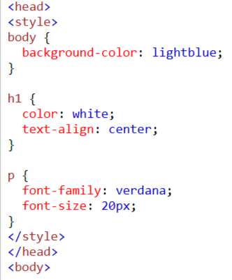

I am gey
Каскадные таблицы стилей.
Во-первых, есть два способа как связать код css и html, либо создать отдельный файл с расширением css и в тег "title" в html добавить тег "link", где написать название файла css, либо же в самом файле html в теге "head" написать тег "style" и дальше уже в нем писать css код.
Сам язык css состоит из того, что мы обращаемся к определенному элементу в html документе и задаем ему какие-либо параметры, используя разные свойства. Смысл в том,чтобы на этом этапе ваш сайт уже приобрел определенную стилистику и некоторые выделяющиеся элементы. 